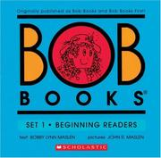
PB · 04.1
AGE4+
Bob Books — Set 1: Beginning Readers
Three-letter words, one sound at a time — teaches the blending skill that turns letters into words a child can sound out alone.
est. this year
Book picks for kids, sorted by age — and a shelf for the grown-ups raising them.
The actual shelf — everything we've bought her, sorted by where it landed.

PB · 04.1
AGEThree-letter words, one sound at a time — teaches the blending skill that turns letters into words a child can sound out alone.
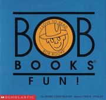
PB · 04.2
AGESlightly longer decodable stories that stretch Set 1's sounds into full sentences — builds the stamina to keep reading past the first page.
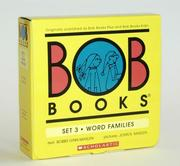
PB · 04.3
AGEGroups words by rhyming family — cat, hat, mat — teaching a reader to spot patterns instead of sounding out every word from scratch.
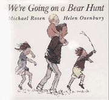
PB · RA
A family wades through grass, mud, and a swirling snowstorm to track down a bear — the repeating refrain builds memory and prediction, and "can't go over it, got to go through it" teaches persistence.
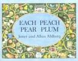
PB · RA
A rhyming "I spy" hunt through nursery-rhyme characters tucked into every picture — sharpens visual search and builds familiarity with classic rhymes.
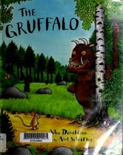
PB · RA
A clever mouse invents a monster to scare off predators, then meets the real thing — teaches that quick thinking beats brute strength, with rhyme and repetition that build vocabulary and prediction.
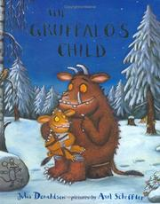
PB · RA
The Gruffalo's daughter sneaks into the deep dark wood to meet the mouse from her father's stories — reinforces the original's rhyme scheme, plus a gentle lesson about curiosity, warnings, and thinking fast when caught out.
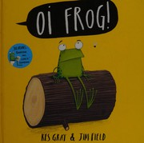
PB · RA
Cat lays down the law on where every animal must sit — mules on stools, hares on chairs — a rhyming-pair game that builds phonemic awareness through silly, sticky vocabulary.
JF · 05
AGELetter-sound drills and short-word practice — direct repetition that builds the sound-to-symbol link independent reading depends on.
JF · 05
AGEPuzzles, mazes, and matching games built around the alphabet — teaches letter recognition and sequencing through play instead of drilling.
JF · 05
AGEA workbook of mazes — builds the pencil control, focus, and forward-planning that both early writing and problem-solving depend on.
JF · 05
AGEA pocket-sized tour of bones, organs, and senses — introduces early science vocabulary and answers the "how does my body work" questions curious kids ask.
WB · G1
Short passages and comprehension questions — moves a reader from decoding words to understanding what they actually mean.
WB · G1
Handwriting and sentence practice, one small step at a time — builds the fine motor control and sentence structure needed to put thoughts on paper.
WB · G1
Shapes, size, and measurement worked step by step — builds spatial reasoning and the everyday math of comparing and measuring.
WB · G1
Simple word problems that turn arithmetic into everyday scenarios — teaches how to translate a sentence into a math operation, not just recite facts.
WB · G1
Addition facts drilled in Kumon's gradual, one-skill-at-a-time worksheets — builds fact fluency through repetition until it's automatic.
WB · G1
Subtraction facts drilled the same gradual way — reinforces addition's inverse until it's automatic, not counted on fingers.
WB · G1
Pattern, sequence, and logic puzzles for Class 1–2 and olympiad prep — builds the reasoning skills that sit underneath both math and reading comprehension.
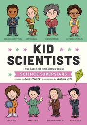
JF · 09
AGETen true stories of the odd, curious childhoods behind science's biggest names — shows that curiosity and getting things wrong, not just talent, are what scientists are made of.
JF · 09
AGETrue stories of the childhood mischief and curiosity behind history's great inventors — models the persistence and creative risk-taking every invention actually took.
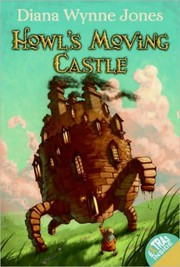
JF · 09
AGEA cursed young hatmaker takes shelter in the walking castle of a vain, elusive wizard — a longer fantasy plot that stretches reading stamina, wrapped around a lesson about not judging by appearances.
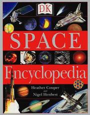
JF · 09
AGEA galaxy-sized reference on rockets, telescopes, and the scientists who looked up — turns an interest in space into research skills: looking things up, cross-referencing, going deeper.
Reading for the grown-ups — on raising kids, and on raising kids who read.
649 · PER
A psychotherapist's case for how a parent's own upbringing shapes the way they raise their child.
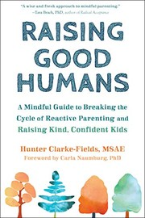
649 · CLA
Mindfulness tools for swapping reactive parenting for calm, values-led responses.
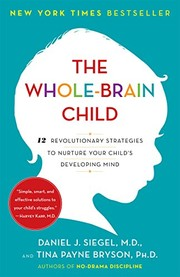
649 · SIE
Twelve strategies for working with a developing brain, not against it.
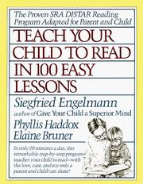
028 · ENG
A scripted, twenty-minutes-a-day phonics program for teaching reading at home.